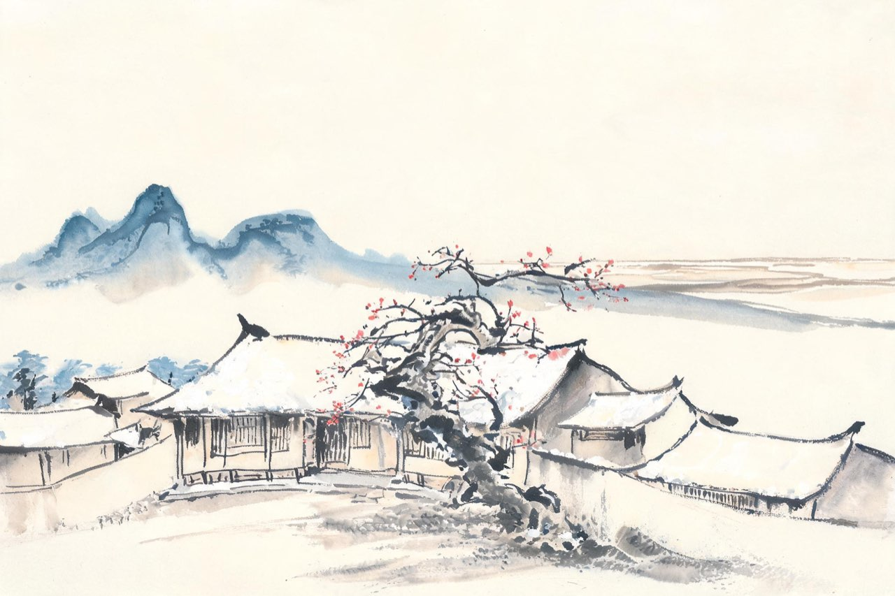
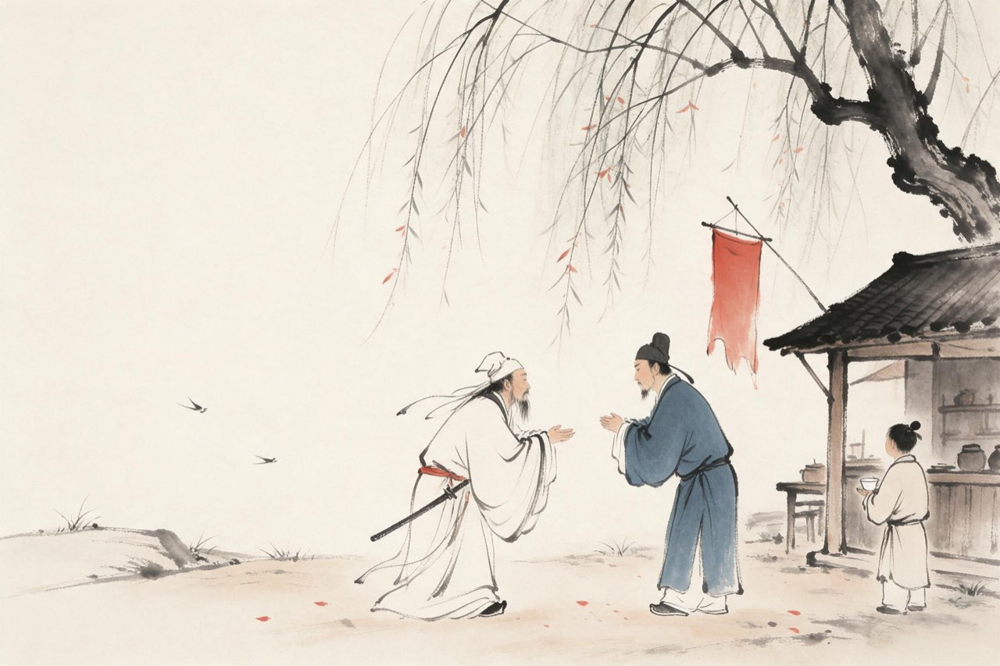
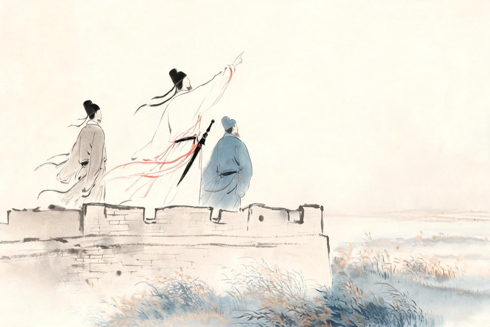

杜甫 · 712-745
壮游
裘马清狂

生于巩县
先天元年，你生于河南巩县南瑶湾村的笔架山下。
这一年，睿宗把皇位传给李隆基，改元先天；第二年再改开元。一个长达四十余年的盛世，正在你出生的婴儿啼哭声里缓缓拉开帷幕——后来人们叫它盛唐。
你家是诗书世家。祖父杜审言，武后朝的名诗人，狂得出了名，却也有狂的资本——五言律诗在他手里渐渐圆熟。你晚年提起这位祖父，语气里全是骄傲：吾祖诗冠古。你幼年丧母，寄养在洛阳姑母家，姑母待你如亲生——多年后你才从旁人口中得知，儿时一场大病，姑母把自己的儿子撇在一边，先救的是你。
诗的名字，家的分量，你从睁开眼起就接在了手里。
注
- 生年先天元年：是年三改年号（太极/延和/先天），开元元年为 713——年谱通说
- 生月旧传正月，无确证，不取（孙微考说）。
- 「吾祖诗冠古」出晚年《赠蜀僧闾丘师兄》；姑母舍子救侄事出《唐故万年县君京兆杜氏墓志》。
江南
二十岁上下，你出了趟远门——往南，下江南。
从洛阳出发，过淮水，经江宁，到姑苏。你去看阖闾的荒丘，渡浙江，泛舟剡溪，在天姥山脚下仰望。四年的水路，把你从书斋里的少年，泡成了一个见过天下之大的人。
没有人知道你在这四年里写了什么——存诗里找不出一篇确凿的少作。你只是在看：看运河上的漕船，看会稽的云，看六朝旧都的残迹。后来你老了，回想这段日子，只用了八个字的画面：枕戈忆勾践，渡浙想秦皇。
青年的游历不带目的，它本身就是目的。这是你一生里最轻的四年。
注
- 吴越之游起讫（开元十九至二十二年）为推定，无诗编年内证。
- 此期无存诗可确指，现存杜诗始于齐赵时期。
回到洛阳，你应进士试，不第。落第的年轻人多半羞于见人，你偏不——转头就往北，去齐赵漫游。邯郸的猎场，青州的郊野，你呼鹰逐兽，裘马轻狂。在泰山脚下，你抬头望山，写下了存诗里最早的千古名篇——
望岳
岱宗夫如何？齐鲁青未了。
造化钟神秀，阴阳割昏晓。
荡胸生曾云，决眦入归鸟。
会当凌绝顶，一览众山小。
注
- 「曾云」一作「层云」，异文待校（文字从仇注本）
- 735 洛阳应举不第（一说 736），两说并存；落第后不作消沉语、转而漫游，从评传
- 741 年归洛阳，首阳山下筑室，祭远祖杜预（《祭远祖当阳君文》）。

遇李白
天宝三载夏，洛阳。一个四十四岁的人从长安飘然而来——翰林待诏李白，被赐金放还。
你三十三岁，诗名未立，正在东都的社交场里周旋。你在诗里抱怨过那两年的光景：二年客东都，所历厌机巧。就在这倦意正浓的时候，李白来了。
你们见了面。没有人记录那天的场面，但所有后来发生的事都证明：两人一见如故。李白刚从权力的中心被礼貌地驱逐，正需要一个人听他讲长安；你正对机巧的东都心生厌倦，恰好看懂他身上那股不肯低头的仙气。
你们约定秋天同游梁宋。分手道别的时候，大约谁也没有想到，这场相遇会成为千年后人们谈起唐朝时最津津乐道的一幕。
注
- 天宝三载秋，李杜同游梁宋；同时段另见李白篇「梁宋之游」。
- 李白赐金放还：天宝三载（744）春，通说
- 相遇具体场景无载，会面对话为演绎。

梁宋
秋天，你们如约到了梁宋。高适也来了——三位诗人，三个失意的人，在宋州会齐。
梁园的吹台，单父的琴台，你们登台怀古，纵酒论文。你后来回忆这段日子，只撷了一个最生动的细节：忆与高李辈，论交入酒垆。三个当世一流的诗才，挤在一家酒垆里喝得畅快——酒垆外，是刚刚从极盛开始拐弯的天宝三载。
白天呼鹰逐兔，看他们弯弓射猎；夜里醉眠共被，听李白讲他的求仙梦。你比他们都年轻，酒量大约也最浅，但那段时间你眼睛里看到的，全是你一生中最亮的日子——后世叫它梁宋之游，你自己叫它：气酣登吹台，怀古视平芜。
注
- 梁宋之游：744 秋，李白、杜甫、高适三人。
- 「气酣登吹台，怀古视平芜」出《遣怀》；呼鹰逐兔见《壮游》「放荡齐赵间」与李白《秋猎孟诸夜归置酒》诸证
- 吹台即禹王台，在汴州（今开封）；梁宋取开封为代表。
次年，你们在东鲁重逢。秋来，兖州石门，李白设酒为你饯行——此后天各一方，再也没有见过。临别他写「飞蓬各自远，且尽手中杯」；你也留了一首七绝给他，语气里带着一点兄长式的担心——
赠李白
秋来相顾尚飘蓬，未就丹砂愧葛洪。
痛饮狂歌空度日，飞扬跋扈为谁雄。
注
- 石门一别后二人永未再见；此后杜甫诗中念及李白者十余首
- 「醉眠秋共被，携手日同行」出《与李十二白同寻范十隐居》，写 745 东鲁同游
- 此诗对李白是惜语也是诤语。